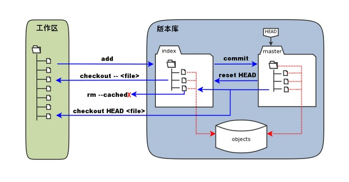

Git working directory, staging area, and repository
Basic concepts
Let's first understand the concepts of the Git working directory, staging area, and repository:
- Workspace：Is the directory you can see in your computer.
- 暂store区：In English, it is called "stage" or "index". It is generally stored in.gitIt is contained in the index file (.git/index) in the directory, so we sometimes also call the staging area the index.
- Versionlibrary：The workspace has a hidden directory.git, which is not the working directory, but rather Git's repository.
The following diagram illustrates the relationship between the working directory, the staging area in the repository, and the repository:

-
In the figure, the left side is the working directory, and the right side is the repository. In the repository, the area marked "index" is the staging area (stage/index), and the area marked "master" is the directory tree represented by the master branch.
-
From the diagram, we can see that "HEAD" is actually a "cursor" pointing to the master branch. Therefore, wherever HEAD appears in the commands shown in the diagram, it can be replaced with master.
The area marked "objects" in the figure is Git's object database, which is actually located in the ".git/objects" directory and contains various objects and content that have been created.
When executing the command on files that have been modified (or added) in the working directorygit addWhen the command is run, the directory tree of the staging area is updated, and the content of files modified (or newly added) in the working directory is written to a new object in the object database, while the ID of that object is recorded in the file index of the staging area.
When a commit operation (git commit) is performed, the directory tree of the staging area is written to the repository (object database), and the master branch is updated accordingly. That is, the directory tree pointed to by master is the directory tree of the staging area at the time of the commit.
When executinggit reset HEADWhen the command is run, the directory tree of the staging area is rewritten and replaced by the directory tree pointed to by the master branch, but the working directory is not affected.
When executinggit rm --cached <file>, the command will directly delete the files from the staging area, while the working directory remains unchanged.
When executinggit checkout .orgit checkout -- <file>, the command will replace the files in the working directory with all or the specified files from the staging area. This operation is very dangerous, as it will clear changes in the working directory that have not been added to the staging area.
When executinggit checkout HEAD .orgit checkout HEAD <file>, the command will replace the files in both the staging area and the working directory with all or some files from the master branch pointed to by HEAD. This command is also extremely dangerous, because it will clear not only uncommitted changes in the working directory but also uncommitted changes in the staging area.
1. Working Directory
The working directory is the project directory on your local computer, where you create, modify, and delete files. The working directory contains all files and subdirectories of the current project.
Features:
- Displays the current status of the project.
- File modifications are made in the working directory, but these changes have not yet been recorded in version control.
2. Staging Area
The staging area is a temporary storage area that contains snapshots of files that are about to be committed to the repository. Before committing, you can selectively add modifications from the working directory to the staging area.
Features:
- The staging area stores the changes that will be included in the next commit.
- You can use it multiple times
git addcommand to add files to the staging area until you are ready to commit all the changes.
Common commands:
git add filename # 将单个文件添加到暂存区 git add . # 将工作区中的所有修改添加到暂存区 git status # 查看哪些文件在暂存区中
3. Repository
The repository contains the complete version history of the project.
Each commit creates a new snapshot in the repository. These snapshots are immutable, ensuring the complete history of the project.
Features:
- The repository is divided into the local repository and the remote repository. This mainly refers to the local repository here.
- The local repository is stored in
.gitthe directory, which contains all committed objects and references.
Common commands:
git commit -m "Commit message" # 将暂存区的更改提交到本地版本库 git log # 查看提交历史 git diff # 查看工作区和暂存区之间的差异 git diff --cached # 查看暂存区和最后一次提交之间的差异
The relationship between the working directory, the staging area, and the repository
1. Working directory -> Staging area
Use the git add command to add modifications from the working directory to the staging area.
git add filename
2. Staging area -> Repository
Use the git commit command to commit modifications from the staging area to the repository.
git commit -m "Commit message"
3. Repository -> Remote repository
Use the git push command to push commits from the local repository to the remote repository.
git push origin branch-name
4. Remote repository -> Local repository
Use the git pull or git fetch command to fetch updates from the remote repository.
git pull origin branch-name # 或者 git fetch origin branch-name git merge origin/branch-name
Example
Suppose you modified file.txt in the working directory:
1. Workspace
Modify file.txt and save.
2. Staging area
Add the changes to the staging area:
git add file.txt
3. Repository
Commit the modifications from the staging area to the local repository:
git commit -m "Update file.txt"
4. Remote repository
Push local commits to the remote repository:
git push origin main
By understanding the roles of the working directory, staging area, and repository and their interrelationships, you can use Git more efficiently for version control and collaborative development.
other extensions